4e édition du Festival TRSS
Plus de 6 000 participants réunis autour de la valorisation des compétences des apprenants et de l'excellence en milieu scolaire, avec des activités sportives, culturelles et de talents.
TRSS Bénin agit auprès des enfants, des adolescents et des jeunes à travers l'éducation, la citoyenneté, le sport, la culture, la santé, l'environnement et le leadership.
TRSS Bénin — Tremplin pour la Réussite Scolaire et Sociale — accompagne l'épanouissement intégral des adolescents et des jeunes, en particulier dans la commune de Tchaourou.
Notre approche conjugue éducation, citoyenneté, santé et environnement, leadership, culture et art pour donner aux jeunes des espaces d'apprentissage, d'expression, de responsabilité et de valorisation.
Élu le 21 avril 2026 en Assemblée Générale extraordinaire, engagé pour la rigueur et la transparence de l'organisation.
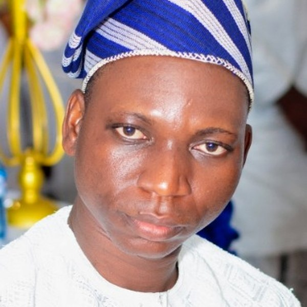
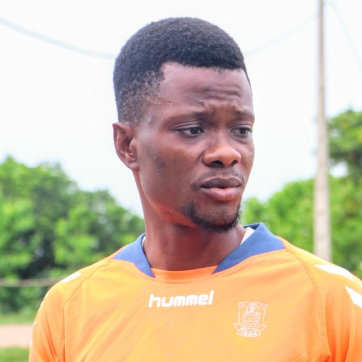
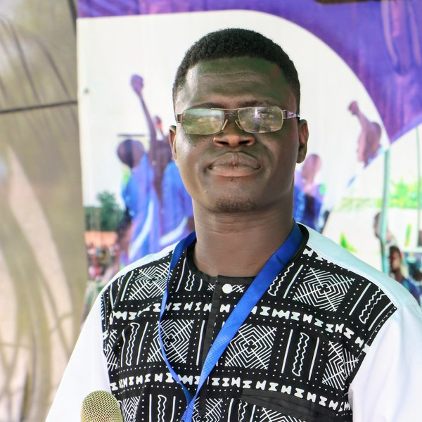
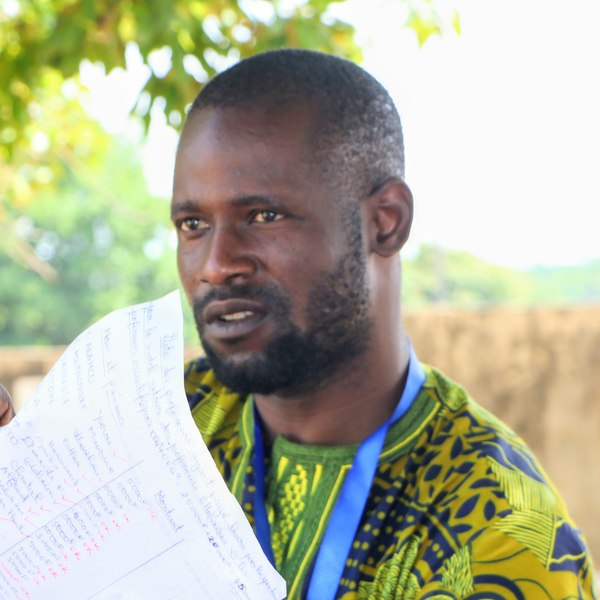
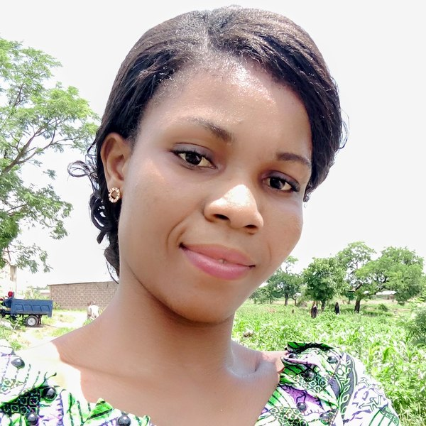
TRSS Bénin articule ses interventions autour de domaines complémentaires, avec une attention particulière portée à l'éducation et à la cohésion sociale.
Soutien scolaire, clubs de lecture et valorisation du mérite académique.
Sensibilisation aux valeurs civiques et à l'engagement communautaire.
Actions d'assainissement, sensibilisation à la santé et protection de l'environnement.
Développement des compétences, leadership et initiatives entrepreneuriales des jeunes.
Expression culturelle, talents, pratiques artistiques et valorisation du patrimoine.
Le parcours documenté de TRSS Bénin montre une montée en puissance de la mobilisation des jeunes et de l'ancrage communautaire.
Participants à la 4e édition du Festival TRSS en 2023
Édition du Festival TRSS sur la période 2024–2025
Lancement de la Croisade des Talents
Domaines d'intervention complémentaires
Plus de 6 000 participants réunis autour de la valorisation des compétences des apprenants et de l'excellence en milieu scolaire, avec des activités sportives, culturelles et de talents.
La dynamique du Festival TRSS est reconduite avec une ambition renforcée autour du mérite scolaire, de l'engagement civique et de la mobilisation communautaire.
Le 26 août 2025 à Cotonou, TRSS Bénin est distinguée lors de la cérémonie « Célébrer autrement l'excellence du mouvement associatif », organisée par la Direction de la Jeunesse et de la Vie Associative (DJLVA) et le Ministère des Sports, consacrant les meilleures associations et mouvements de jeunes des départements du Bénin.
TRSS élargit son champ d'action vers le brassage culturel entre les différentes ethnies de Tchaourou, en s'appuyant sur la culture, le sport, les talents et la sensibilisation.
Des initiatives conçues pour créer des espaces où les jeunes peuvent apprendre, s'exprimer, se rencontrer et être valorisés.
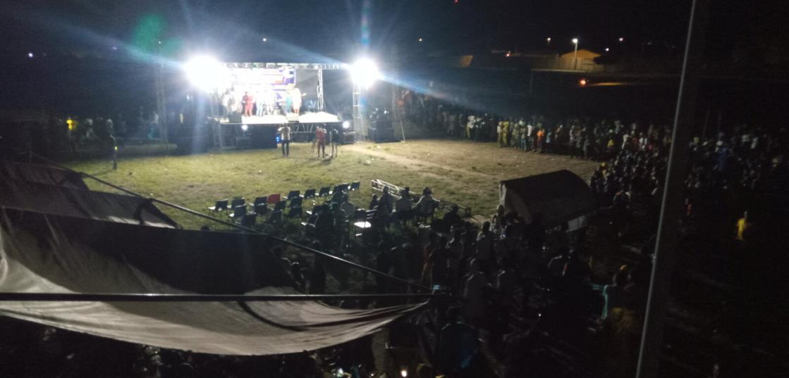
La 4e édition a mobilisé plus de 6 000 participants à l'Esplanade du Stade Municipal de Tchaourou autour de l'excellence scolaire, sportive et culturelle.
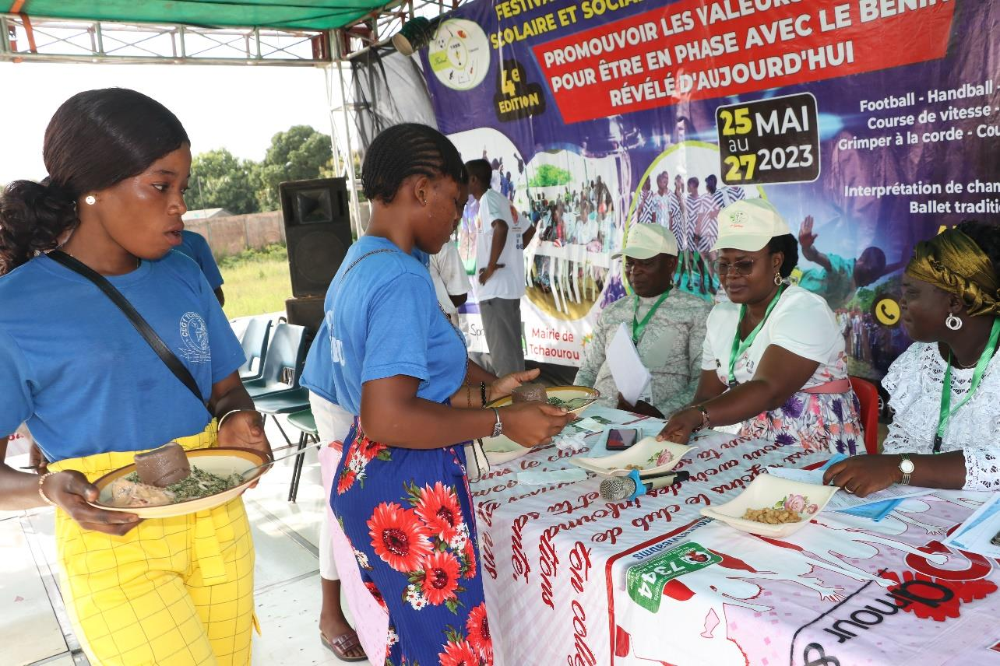
La 5e édition s'inscrit dans la continuité du Festival et renforce la promotion du mérite scolaire et de l'engagement civique des jeunes.
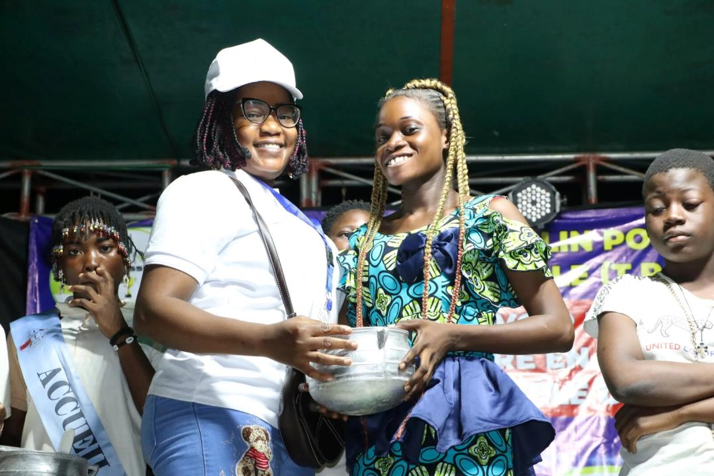
Le projet vise à favoriser le brassage culturel, le vivre-ensemble et la cohésion sociale entre les différentes ethnies présentes dans la commune de Tchaourou.
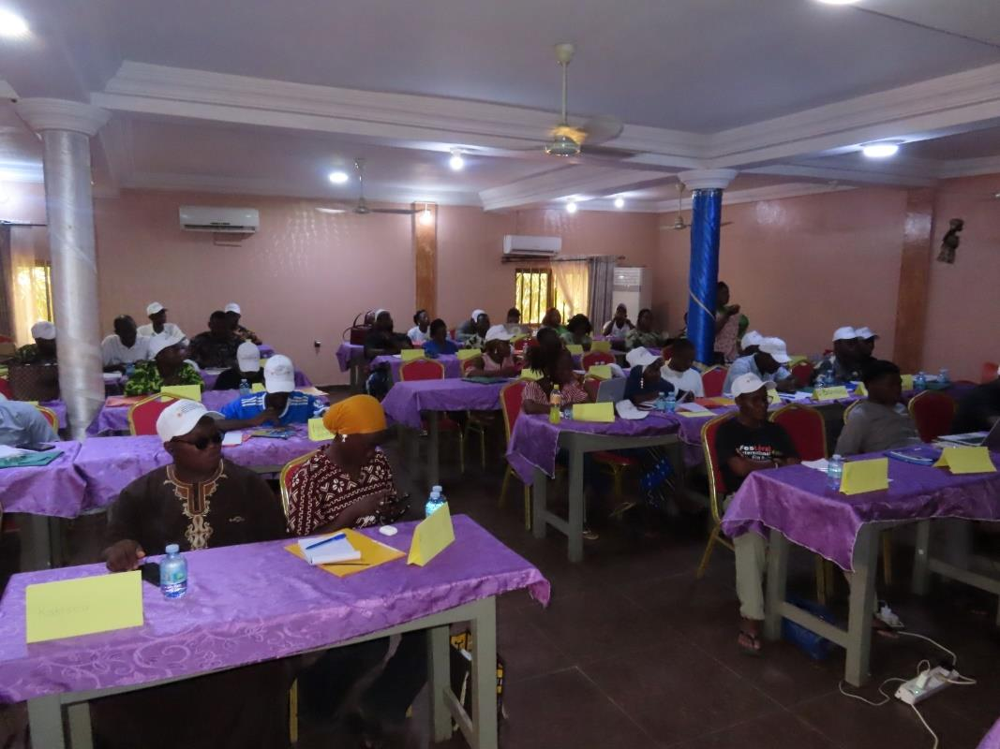
Le projet pilote prévoit des activités d'éducation civique, d'expression et médias, d'engagement concret, de reconnaissance et de renforcement des capacités dans trois écoles de Tchaourou.
Une sélection de photographies extraites du rapport technique d'activités 2023–2026 pour rendre visibles les actions, les jeunes, les partenaires et l'ancrage de terrain.
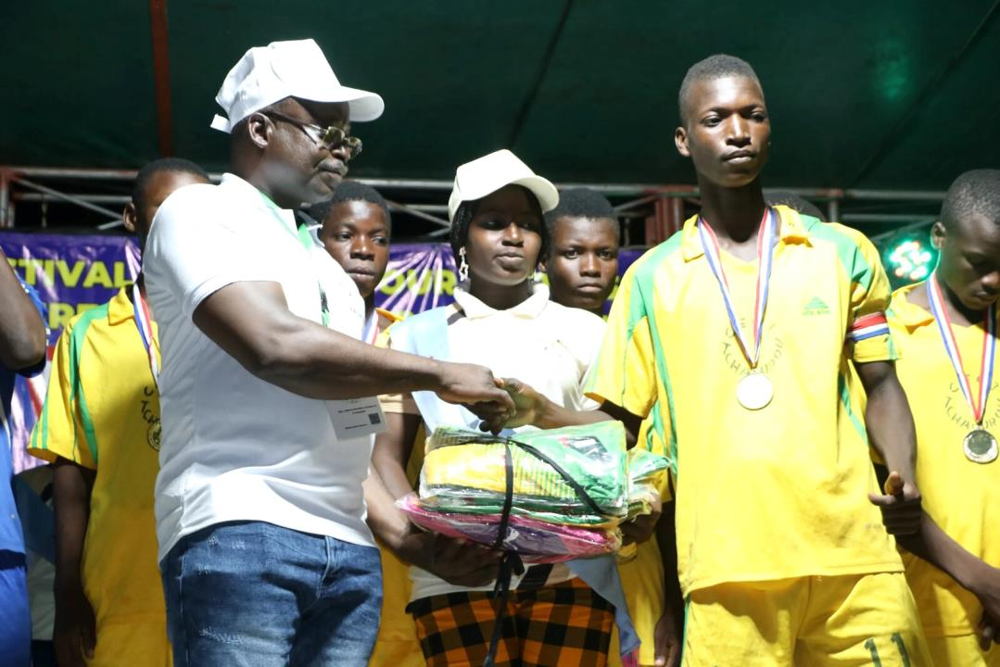
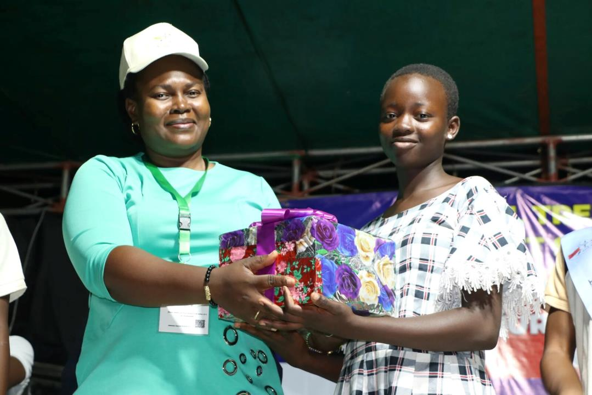
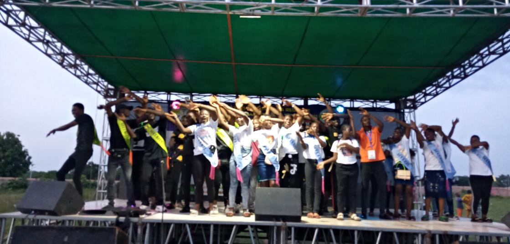
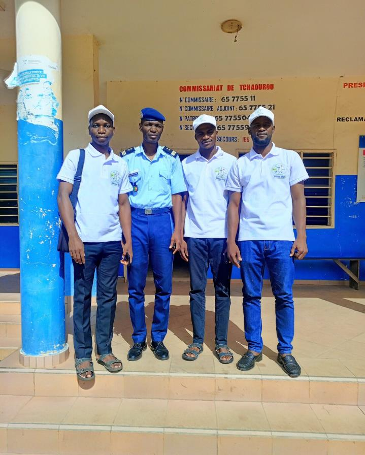
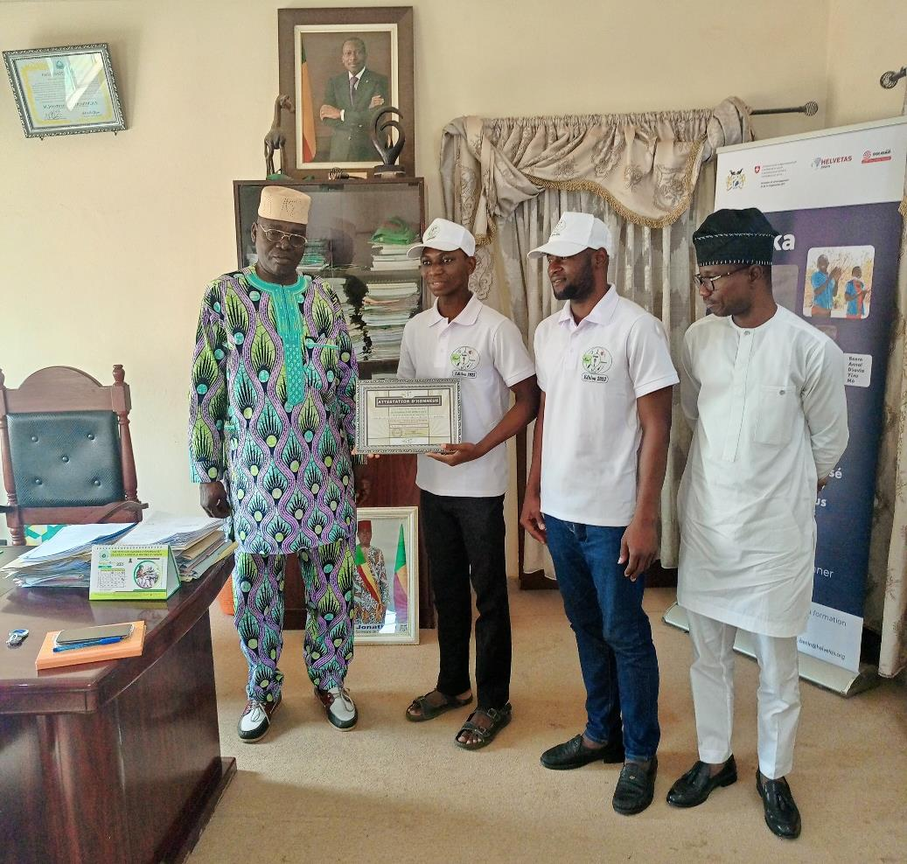
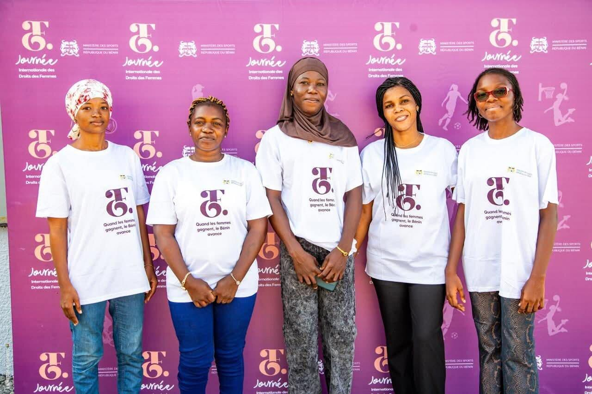
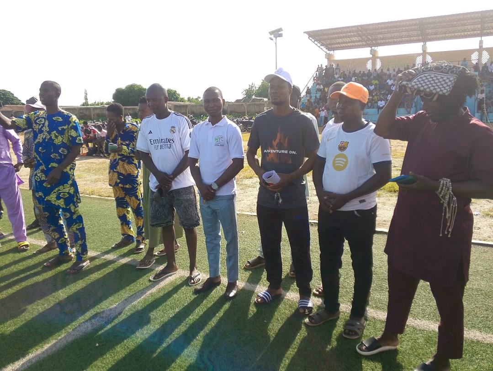
TRSS Bénin met à disposition des supports permettant de mieux comprendre son parcours et de localiser son siège.
Le bilan triennal présente les domaines d'intervention, les activités, les cibles, l'envergure de l'intervention, les partenariats et les perspectives de TRSS Bénin.
Télécharger le rapportCarte institutionnelle de localisation du siège de TRSS Bénin à Tchaourou, avec les références géographiques et le lien de navigation.
Télécharger la cartographieLe rapport d'activités documente une diversification des partenariats institutionnels, techniques et de coopération.
Pour un partenariat, un appui technique, une collaboration ou toute demande institutionnelle, contactez directement TRSS Bénin.
Localisation de référence : Okélagba, Tchaourou. Les coordonnées cartographiques du siège sont disponibles dans la carte institutionnelle de TRSS Bénin.
Ouvrir sur Google Maps